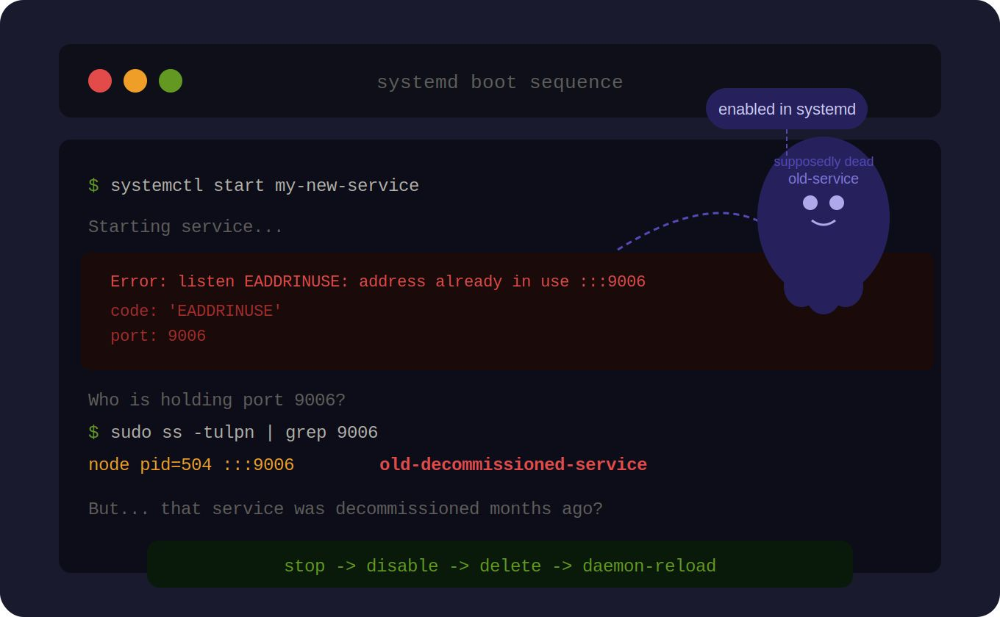

What Happened
Our team decommissioned an old service. Someone stopped it and called it done. No disable. No deletion. No daemon-reload.
Fast forward to an Easter weekend maintenance window. A server reboot happened as planned.
The dead service came back to life.
Because it was never disabled, systemd still considered it enabled and started it automatically on boot. It grabbed the port before our new service could, and the new service crashed with EADDRINUSE. Alerts fired. Easter plans canceled.

Root Cause
The incident was not caused by application code or new-service config. It was caused by incomplete decommissioning.
- The old service unit file still existed.
- The service remained enabled in systemd.
- A reboot retriggered auto-start behavior.
- The old process bound the same port as the replacement.
The Fix
The resolution was straightforward once we found the real issue:
sudo systemctl stop old-service
sudo systemctl disable old-service
sudo rm /etc/systemd/system/old-service.service
sudo systemctl daemon-reloadWhy This Matters
Decommissioning is not the same as stopping. A stopped service that is still enabled will come back on reboot.
Maintenance windows, disaster recovery events, cloud instance restarts, and kernel patch reboots all trigger the same risk.
Checklist for Service Decommissioning
Use this sequence every time:
- Stop the service.
- Disable it so it cannot auto-start on boot.
- Delete the obsolete unit file.
- Reload systemd so state and units are refreshed.
Key Lesson
Stop → Disable → Delete → Reload. In that order. Always.